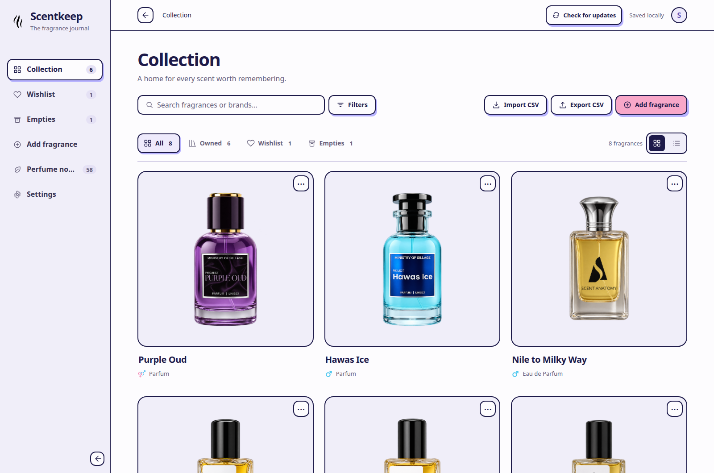
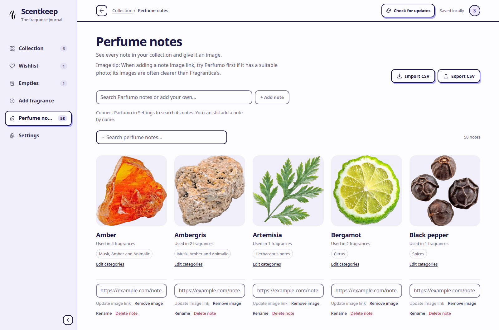

Remember what makes it yours.
Notes, perfumers, personal ratings and impressions. Keep the details that make a fragrance worth coming back to.
Build a fragrance record
Your bottles, your wishlist, your scent memories. Bring them together in a personal fragrance journal, right on your desktop.
For Windows, macOS & Linux


Stored on your computer
Notes in your own words
Readable CSV backups
The everyday favourite. The next discovery. The bottle you finished years ago. There’s a place for all of them.
Notes, perfumers, personal ratings and impressions. Keep the details that make a fragrance worth coming back to.
Build a fragrance recordBuild your note library, add categories and images, and see the ingredients that appear across your collection.
Explore your note libraryFind a fragrance on Parfumo, review its available details and bring them into your journal. You can always enter a record by hand.
Fragrance importPick a palette, switch between light and dark, and personalise your local profile. Your preferences stay on this installation.
Make it your ownKeep your working collection locally. Export readable CSV files, choose a backup folder, or connect your own WebDAV storage.
Backups & CSVInstall Scentkeep on your desktop and make room for your collection.
Installation guideAdd fragrances, arrange your shelves and find exactly what you’re looking for.
Collection guideBring notes, ratings and personal impressions into a complete fragrance record.
Fragrance recordsConnect Parfumo for note search, or build your own catalogue by hand.
Parfumo guideExport readable CSV files, restore your records and set up local backups.
Backups & CSVConnect an HTTPS WebDAV folder to keep a copy beyond this computer.
WebDAV setupSearch by fragrance or brand, or paste a link. Review and import the available details.
Fragrance importEdit shared notes, manage categories and images, and understand your main accords.
Notes & main accordsChoose from 11 palettes, switch light or dark appearance, and personalise your local profile.
Appearance settingsUse WebDAV to move your collection between installations, with the sync rules explained.
Prepare consistent bottle artwork with a ready-to-copy product image prompt.
No guides match your search. Try “backup”, “notes” or “install”.
Your working collection lives on your computer. Readable exports and optional backups help you look after what you’ve built.
Look after your collectionScentkeep is a desktop app for Windows, macOS and Linux. Find the packages and platform-specific steps in the installation guide.
You can enter notes manually. A connected Parfumo account adds note search and metadata. Connection can be affected by Cloudflare verification; the Parfumo guide covers troubleshooting.
Yes, through a shared WebDAV folder. Sync merges records and remote values overwrite matching local records. Deletions do not propagate. Read the multi-device guide before your first sync.
Export both your fragrances and notes to CSV. Keep both files to restore the complete collection. The backup guide explains imports, exports and automatic copies.
Open Settings, choose a palette in Appearance, and use the Dark mode switch. Choices are saved on this installation. The appearance guide lists the available palettes.